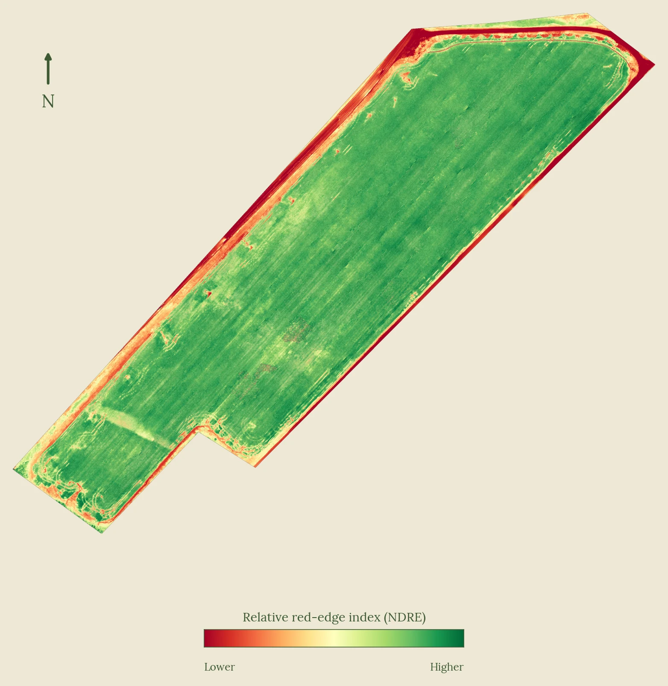

Aerial Crop Imaging for Mid-South Row Crops
I fly your field with a multispectral drone and mark the spots that look different from the rest. You and your agronomist decide what they are and what to do about them. I sell no seed, no chemicals, and no hardware.
Get in touch →Soybeans, cotton, and corn. Each of these is a call you already have to make, with a short window to make it.
Flown from emergence to V3. The thin spots are marked on the picture so you and your agronomist can check them on the ground while a replant is still on the table.
Flown from canopy closure to harvest. Patches standing above the crop are marked mid-field, where they are hard to see from the turnrow or the road.
A dated, located picture of the field after hail, wind, or high water. It shows what the field looked like that day. It is not a damage estimate and it carries no acreage figures. Your adjuster decides what it shows.
Relative NDRE, soybeans 70 days after planting, flown June 2026 in the Arkansas Delta. A healthy field reads even, like this one. When a spot runs behind the rest, the image shows you where to walk. The red rim at the edge of the field is bare ground, not crop.

The report comes back within 48 hours of landing. Weather can move the flight day. It doesn't move the clock.
A sharp true-color image of the entire field, stitched from the flight. Zoom in to the row.
A color image of the same field showing which parts are running ahead of or behind the rest of that field on the day of the flight.
Each spot that stands out gets a letter and a close-up. Spot locations are approximate, good for finding your way to it on the ground.
Plain words on what stood out and where. It says where to look. It does not say what the problem is or what to do about it. That call belongs to you and your agronomist.
A report, the images, and a Google Earth layer. No platform to log into and no subscription.
Your imagery is processed on my own equipment in Memphis. It does not go to an outside cloud service.
The vigor image is relative. It shows how each part of the field compares to the rest of that field on the day I flew it. It is not a calibrated measurement, and I won't compare the numbers from one flight to the next.
What does carry over is location. Every spot is marked in the same place on the ground, so on a second flight you can see whether it is still there, bigger, or gone.
One field, one flight, at a flat price I quote before I come. You tell me the field and how many acres it is. You sign off on the field before I fly.
One pilot, based in Memphis, flying the Mid-South. You talk to the person who flies the field and writes the summary.
The FAA remote pilot certificate required for commercial drone work. It covers airspace rules, weather, and flight operations.
$1M aviation liability coverage. Certificate of insurance on request.
No seed, no chemicals, no hardware, no recommendations. The only thing I sell is the picture and where to look.
No pitch. Tell me what you are growing and which field you have a question about, and we will see whether a flight makes sense.
(901) 565-5123. Leave a message and I'll call you back.
chip@sunfloweraerial.com